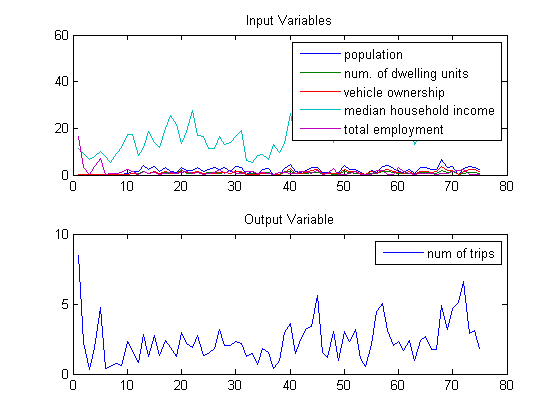
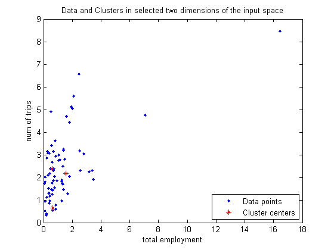
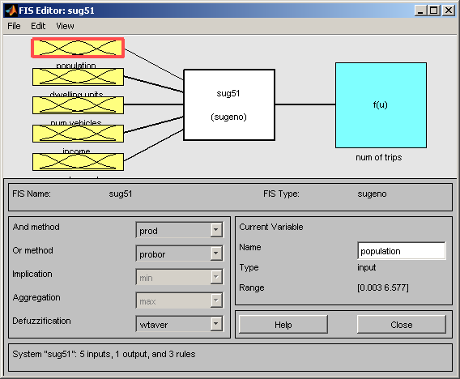
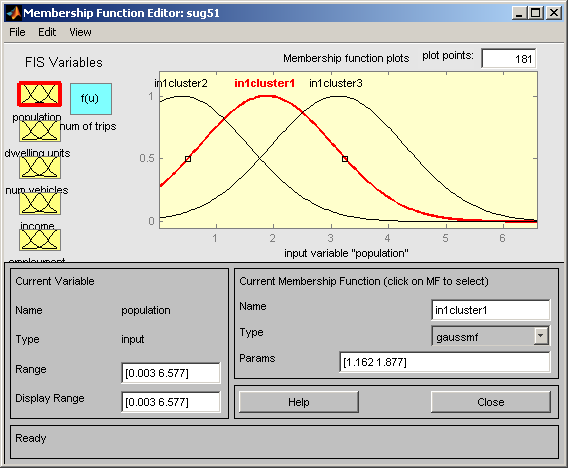
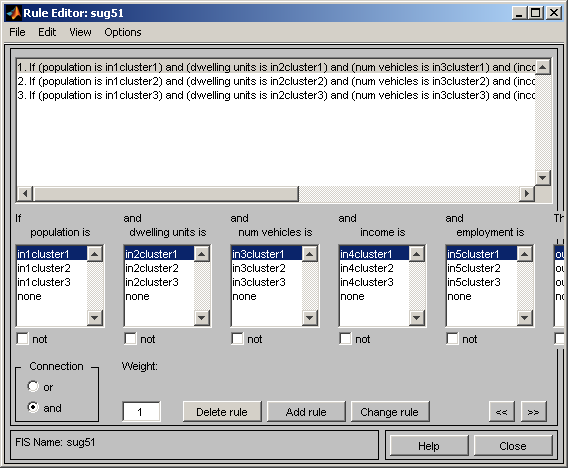
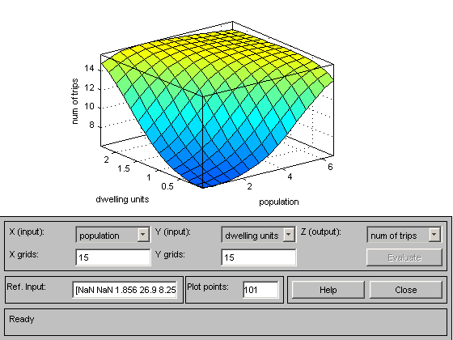
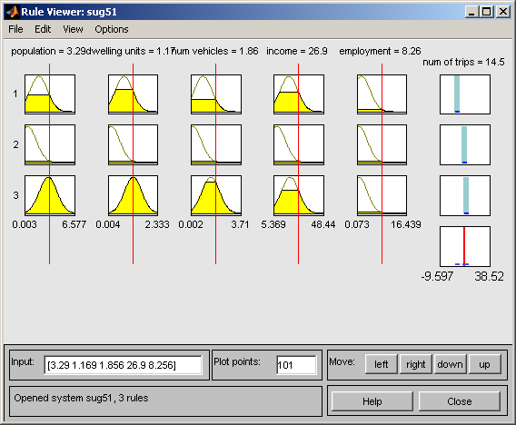

Modeling Traffic Patterns using Subtractive Clustering
This demo demonstrates the use of subtractive clustering to model traffic patterns in an area based on the area's demographics.
Contents
The Problem: Understanding Traffic Patterns
In this demo we attempt to understand the relationship between the number of automobile trips generated from an area and the area's demographics. Demographic and trip data were collected from traffic analysis zones in New Castle County, Delaware. Five demographic factors are considered: population, number of dwelling units, vehicle ownership, median household income and total employment.
Hereon, the demographic factors will be addressed as inputs and the trips generated will be addressed as output. Hence our problem has five input variables (five demographic factors) and one output variable (num of trips generated).
The Data
We will now load the input and output variables used for this demo into the workspace.
tripdata
Two variables are loaded in the workspace, datin and datout. datin has 5 columns representing the 5 input variables and datout has 1 column representing the 1 output variable.
subplot(2,1,1) plot(datin) legend('population', 'num. of dwelling units', 'vehicle ownership',... 'median household income', 'total employment'); title('Input Variables') subplot(2,1,2) plot(datout) legend('num of trips'); title('Output Variable')
Figure 1: Input and Output variables
The number of rows in datin and datout, 75, represent the number of observations or samples or datapoints available. A row in datin, say row 11, constitutes a set of observed values of the 5 input variables (population, number of dwelling units, vehicle ownership, median household income and total employment) and the corresponding row, row 11, in datout represents the observed value for the number of trips generated given the observations made for the input variables.
We will model the relationship between the input variables (demographics) and the output variable (trips) by first clustering the data. The cluster centers will then be used as a basis to define a Fuzzy Inference System (FIS) which can then be used to explore and understand traffic patterns.
Why Clustering and Fuzzy Logic?
Clustering can be a very effective technique to identify natural groupings in data from a large data set, thereby allowing concise representation of relationships embedded in the data. In this example, clustering allows us to group traffic patterns into broad categories hence allowing for easier understandability.
Fuzzy logic is an effective paradigm to handle imprecision. It can be used to take fuzzy or imprecise observations for inputs and yet arrive at crisp and precise values for outputs. Also, the Fuzzy Inference System (FIS) is a simple and commonsensical way to build systems without using complex analytical equations.
In our example, fuzzy logic will be employed to capture the broad categories identified during clustering into a Fuzzy Inference System (FIS). The FIS will then act as a model that will reflect the relationship between demographics and auto trips.
Clustering and fuzzy logic together provide a simple yet powerful means to model the traffic relationship that we want to study.
Clustering the Data
subclust is the function that implements a clustering technique called subtractive clustering. Subtractive clustering, [Chi94], is a fast, one-pass algorithm for estimating the number of clusters and the cluster centers in a dataset.
In this section, we will see how subtractive clustering is performed on a dataset and in the next section we will explore independently how clustering is used to build a Fuzzy Inference System(FIS).
[C,S] = subclust([datin datout],0.5);
The first argument to the subclust function is the data to be clustered. The second argument to the function is the radii which marks a cluster's radius of influence in the input space.
The variable C now holds all the centers of the clusters that have been identified by subclust. Each row of C contains the position of a cluster.
C
C =
1.8770 0.7630 0.9170 18.7500 1.5650 2.1830
0.3980 0.1510 0.1320 8.1590 0.6250 0.6480
3.1160 1.1930 1.4870 19.7330 0.6030 2.3850
In this case, C has 3 rows representing 3 clusters with 6 columns representing the positions of the clusters in each dimension.
subclust has hence identified 3 natural groupings in the demographic-trip dataset being considered. The following plot shows how the clusters have been identified in the 'total employment' and 'trips' dimensions of the input space.
clf; plot(datin(:,5), datout(:,1), '.', C(:,5),C(:,6),'r*') legend('Data points', 'Cluster centers', 'Location', 'SouthEast') xlabel('total employment') ylabel('num of trips') title('Data and Clusters in selected two dimensions of the input space')
Figure 2: Cluster centers in the 'total employment' and 'trips' dimensions of the input space
The variable S contains the sigma values that specify the range of influence of a cluster center in each of the data dimensions. All cluster centers share the same set of sigma values.
S
S =
1.1621 0.4117 0.6555 7.6139 2.8931 1.4395
S in this case has 6 columns representing the influence of the cluster centers on each of the 6 dimensions.
Generating the Fuzzy Inference System (FIS)
genfis2 is the function that creates a FIS using subtractive clustering. genfis2 employs subclust behind the scenes to cluster the data and uses the cluster centers and their range of influences to build a FIS which will then be used to explore and understand traffic patterns.
myfis=genfis2(datin,datout,0.5);
The first argument is the input variables matrix datin, the second argument is the output variables matrix datout and the third argument is the radii that should be used while using subclust.
genfis2 assigns default names for inputs, outputs and membership functions. For our understanding it is beneficial to rename the inputs and outputs meaningfully.
% Assign names to inputs and outputs myfis = setfis(myfis, 'input',1,'name','population'); myfis = setfis(myfis, 'input',2,'name','dwelling units'); myfis = setfis(myfis, 'input',3,'name','num vehicles'); myfis = setfis(myfis, 'input',4,'name','income'); myfis = setfis(myfis, 'input',5,'name','employment'); myfis = setfis(myfis, 'output',1,'name','num of trips');
Understanding the Clusters-FIS Relationship
A FIS is composed of inputs, outputs and rules. Each input and output can have any number of membership functions. The rules dictate the behavior of the fuzzy system based on inputs, outputs and membership functions. genfis2 constructs the FIS in an attempt to capture the position and influence of each cluster in the input space.
myfis is the FIS that genfis2 has generated. Since the dataset has 5 input variables and 1 output variable, genfis2 constructs a FIS with 5 inputs and 1 output. Each input and output has as many membership functions as the number of clusters that subclust has identified. As seen previously, for the current dataset subclust identified 3 clusters. Therefore each input and output will be characterized by 3 membership functions. Also, the number of rules equals the number of clusters and hence 3 rules are created.
We can now probe the FIS to understand how the clusters got converted internally into membership functions and rules.
fuzzy(myfis)
Figure 3: The graphical editor for building Fuzzy Inference Systems (FIS)
fuzzy is the function that launches the graphical editor for building fuzzy systems. fuzzy(myfis) launches the editor set up to edit myfis, the FIS that we just generated. As can be seen, the FIS has 5 inputs and 1 output with the inputs mapped to the outputs through a rulebase (white box in the figure).
Let's now try to analyze how the cluster centers and the membership functions are related.
mfedit(myfis)
Figure 4: The graphical membership function editor
mfedit(myfis) launches the graphical membership function editor. It can also be launched by clicking on the inputs or the outputs in the FIS editor launched by fuzzy.
Notice that all the inputs and outputs have exactly 3 membership functions. The 3 membership functions represent the 3 clusters that were identified by subclust.
Each input in the FIS represents an input variable in the input dataset datin and each output in the FIS represents an output variable in the output dataset datout.
By default, the first membership function, in1cluster1, of the first input population would be selected in the membership function editor. Notice that the membership function type is "gaussmf" (gaussian type membership function) and the parameters of the membership function are [1.162 1.877], where 1.162 represents the spread coefficient of the gaussian curve and 1.877 represents the center of the gaussian curve. in1cluster1 captures the position and influence of the first cluster for the input variable population. (C(1,1)=1.877, S(1)=1.1621 )
Similarly, the position and influence of the other 2 clusters for the input variable population are captured by the other two membership functions in1cluster2 and in1cluster3.
The rest of the 4 inputs follow the exact pattern mimicking the position and influence of the 3 clusters along their respective dimensions in the dataset.
Now, let's explore how the fuzzy rules are constructed.
ruleedit(myfis)
Figure 5: The graphical rule editor
ruleedit is the graphical fuzzy rule editor. As you can notice, there are exactly three rules. Each rule attempts to map a cluster in the input space to a cluster in the output space.
The first rule can be explained simply as follows. If the inputs to the FIS, population, dwelling units, num vehicles, income, and employment, strongly belong to their respective cluster1 membership functions then the output, num of trips, must strongly belong to its cluster1 membership function. The (1) at the end of the rule is to indicate that the rule has a weight or an importance of "1". Weights can take any value between 0 and 1. Rules with lesser weights will count for less in the final output.
The significance of the rule is that it succinctly maps cluster 1 in the input space to cluster 1 in the output space. Similarly the other two rules map cluster 2 and cluster 3 in the input space to cluster 2 and cluster 3 in the output space.
If a datapoint closer to the first cluster, or in other words having strong membership to the first cluster, is fed as input to myfis then rule1 will fire with more firing strength than the other two rules. Similarly, an input with strong membership to the second cluster will fire the second rule will with more firing strength than the other two rules and so on.
The output of the rules (firing strengths) are then used to generate the output of the FIS through the output membership functions.
The one output of the FIS, num of trips, has 3 linear membership functions representing the 3 clusters identified by subclust. The coefficients of the linear membership functions though are not taken directly from the cluster centers. Instead, they are estimated from the dataset using least squares estimation technique.
All 3 membership functions in this case will be of the form a*population + b*dwelling units + c*num vehicles + d*income + e*employment + f, where a, b, c, d, e and f represent the coefficients of the linear membership function. Click on any of the num of trips membership functions in the membership function editor to observe the parameters of these linear membership functions.
Using the FIS for Data Exploration
You can now use the FIS that has been constructed to understand the underlying dynamics of relationship being modeled.
surfview(myfis)
Figure 6: Input-Output Surface viewer
surfview is the surface viewer that helps view the input-output surface of the fuzzy system. In other words, this tool simulates the response of the fuzzy system for the entire range of inputs that the system is configured to work for. Thereafter, the output or the response of the FIS to the inputs are plotted against the inputs as a surface. This visualization is very helpful to understand how the system is going to behave for the entire range of values in the input space.
In the plot above the surface viewer shows the output surface for two inputs population and num of dwelling units. As you can see the number of auto trips increases with increase in population and dwelling units, which sounds very rational. You can change the inputs in the X and Y drop-down boxes to observe the output surface with respect to the inputs you choose.
ruleview(myfis)
Figure 7: Rule viewer that simulates the entire fuzzy inference process
ruleview is the graphical simulator for simulating the FIS response for specific values of the input variables. Now, having built the fuzzy system, if we want to understand how many trips will occur for a particular demographic setup, say an area with a particular population, a certain number of dwelling units and so on, this tool will help you simulate the FIS response for the input of your choice.
Another feature of this GUI tool is, it gives you a snapshot of the entire fuzzy inference process, right from how the membership functions are being satisfied in every rule to how the final output is being generated through defuzzification.
Conclusion
This example has attempted to convey how clustering and fuzzy logic can be employed as effective techniques for data modeling and analysis.
Fuzzy logic has also found various applications in other areas of technology like non-linear control, automatic control, signal processing, system identification, pattern recognition, time series prediction, data mining, financial applications etc.,
Explore other demos and the documentation for more insight into fuzzy logic and its applications.
Glossary
input space - it is a term used to define the range of all possible values in the dataset. When using subclust the input space refers to the entire range of values between the maximum and minimum in each dimension (column) of the dataset.
defuzzification - the process of transforming a fuzzy output of a fuzzy inference system into a crisp output.
firing strength - The degree to which the antecedent part of a fuzzy rule is satisfied. Also known as degree of fulfillment.
fuzzy inference system (FIS) - The overall name for a system that uses fuzzy reasoning to map an input space to an output space
Reference:
[Chi94] - S. Chiu, "Fuzzy Model Identification Based on Cluster Estimation," J. of Intelligent & Fuzzy Systems, Vol. 2, No. 3, 1994.